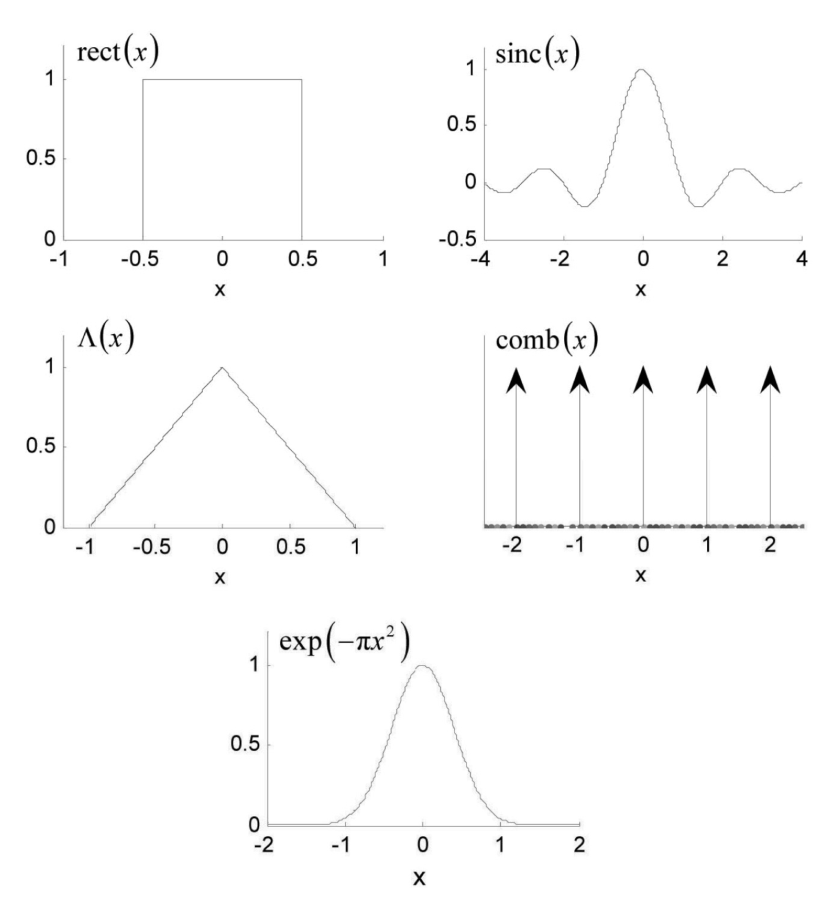
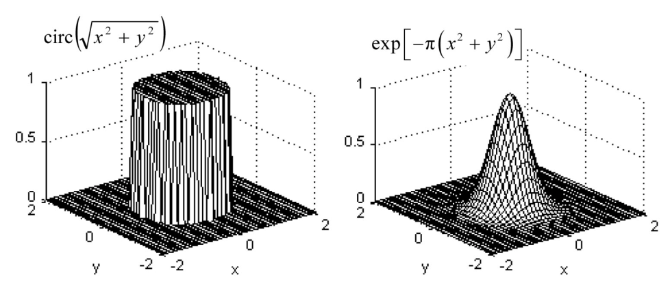
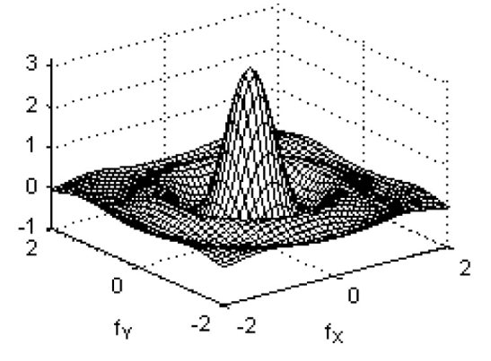
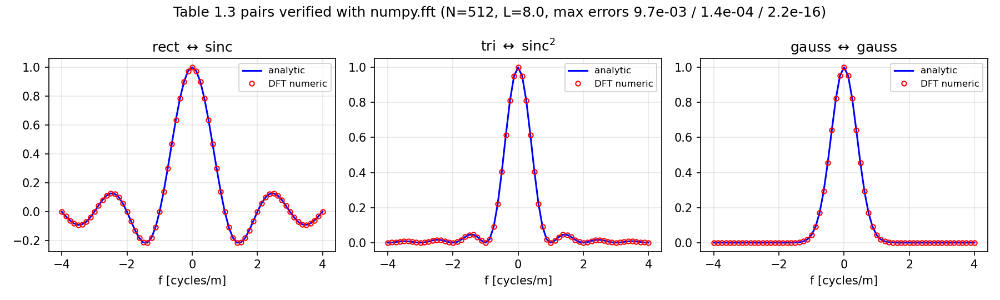
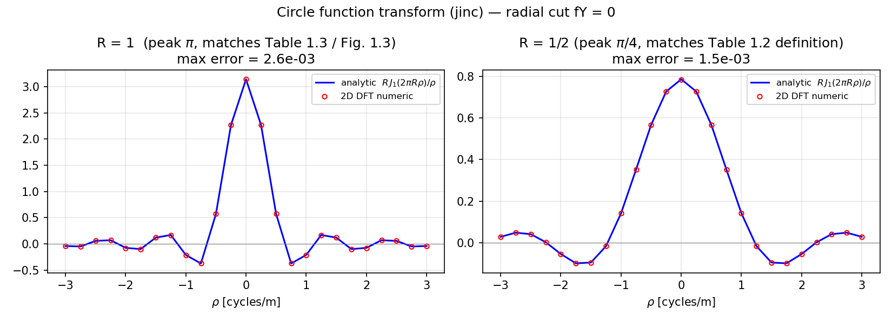
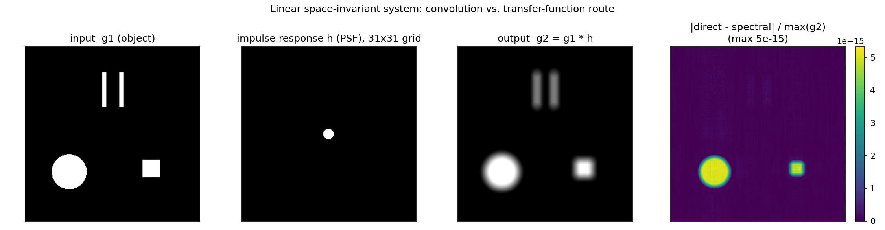

第 1 章 解析傅里叶理论复习#
本章解决：傅里叶光学所需的解析数学基础——傅里叶变换的定义与约定，线性、相似、位移、卷积、相关与 Parseval 等基本定理，rect、circ、高斯、chirp 等基本函数及其变换对，以及线性空间不变系统的卷积与传递函数表示。掌握这套语言后，衍射、成像与滤波可以统一写成"输入—系统—输出"的频域运算，并为后续离散实现提供连续域的对照标准。 本栏目依据 David G. Voelz《Computational Fourier Optics: A MATLAB Tutorial》（SPIE Press, 2007）编写。
1.0 本章导图#
1.1 一点历史与本书目的#
今天叫**傅里叶光学（Fourier optics）**的这门光学分支，诞生于 1940 到 1960 年代：电信和电路设计的一套分析技术被搬进了光衍射理论。1968 年，Joseph W. Goodman 的《Introduction to Fourier Optics》出版，这门"暴发户学科"从此站稳脚跟——这本教科书把基本概念解释并统一起来，后续版本持续推动傅里叶光学的应用。如今傅里叶光学是衍射、相干、成像分析的基石，也是波前控制、随机介质传播、全息这类专题的基础。
今天学傅里叶光学，自然要走向计算机，原因至少有两条：
- 衍射积分除了几个最简单的孔径函数，解析上根本积不出来；
- FFT 算法 + 傅里叶光学的线性系统框架 = 求解波动光学问题的高效计算路线。
计算机当然也能直接上数值积分，把衍射问题解得非常精确。但本书讲的是 FFT 以及怎么把它用到各种傅里叶光学问题上去：编码步骤与解析概念一一对应，FFT 的速度让"reasonable 时间内做几千次光学传播或成像仿真"成为可能。本书探索的这套方法，正是工业界波动（物理）光学仿真工具的基础。
不过没有免费午餐（原书原话：要是有免费午餐，我们就能边吃边学傅里叶光学了）。FFT 是各种数值伪影的"帮凶"——本书会尽力把这些坑暴露出来，并给出约束条件帮你减少损害。
这是一本教程式教材，逐步指导你既写傅里叶光学的代码、也上手 MATLAB。没用过 MATLAB 也不用慌：第 3 章从 "Open MATLAB" 开始带你过一遍基础，到本书结尾，你应该能自己编部分相干光的衍射程序。各章末尾的习题给你折腾代码的空间。
拓展：解析派 vs 数值派，这本书站哪边？
解衍射问题有三条路：解析（只有理想孔径能积出来）、数值积分（精确但慢，一次仿真动辄数小时）、FFT + 线性系统（近似但快几个数量级，能做参数扫描和大量仿真）。本书选第三条，代价是你要同时面对两类误差——解析模型本身的近似（标量场、傍轴等）和离散化的数值伪影（采样、窗截断、循环卷积）。本书的写法是：先把解析理论（本章）立好，第 2 章专讲"搬进计算机后发生了什么"。
原书假设你已经学过一点傅里叶光学——从零讲起内容太多，会喧宾夺主。解析理论在全书以摘要形式给出，记号和形式紧随 Goodman 的《Introduction to Fourier Optics》。要补推导细节，看 Goodman 以及章末列的其他参考书。
1.2 计算傅里叶光学的适用范围#
本书代码里的变量、向量、数组尽量用物理量定义：建模空间平面的采样阵列，坐标就用"米"做单位；整数下标只在绕不开时才出现。这样做的目的是让物理世界和计算机代码之间的连线保持清晰，MATLAB 的向量化结构恰好适合这种写法。所以书里的编程例子都带着具体的孔径尺寸、波长、传播距离——有些例子纯学术，有些就是你现实中会碰到的。
但你很快会看到一个反复出现的主题：计算机里样本阵列的有限尺寸，限制了你能考虑的参数范围。
可以借"光学设计者的困境"来理解这个限制：什么时候该用几何光学预测系统性能，什么时候该切换到波动光学？两者的区别在于，几何光学假设光线走直线，忽略光的波动性带来的衍射扩展。常规答案是：偏离完美很小（接近"衍射极限"）时，需要波动光学描述；偏离很大时，几何光线光学就够用了，而且它的实现选项更灵活。
解析傅里叶光学理论本身相当一般化，但有限阵列尺寸会把计算机建模圈在"近完美"的情形里：典型地，小发散角的光束传播、小面积的仿真像区等等。对实际应用来说，这恰好与光学设计中波动光学性能预测所覆盖的领域相同。
本章余下部分就是一份摘要：傅里叶变换的基本定义、定理、基本函数与变换对，外加线性系统理论复习。
拓展：'近衍射极限'是个什么量级？
圆孔衍射斑的角半径约 \(1.22\lambda/D\)（\(D\) 是孔径直径）。比如 \(D=10\) cm、\(\lambda=500\) nm 的望远镜，衍射极限角约 \(6\times10^{-6}\) rad = 6 μrad。如果系统像差折算的波前误差远小于一个波长（Rayleigh 判据 \(\lambda/4\)），像斑尺寸由衍射决定——这就是"近衍射极限"，必须用波动光学算。反之，像差斑比衍射斑大得多时，几何光线追踪就足够了。计算机仿真受阵列尺寸限制，能高效仿真的正是前者这种"小角度、小范围"的世界。
1.3 傅里叶变换的定义与存在条件#
光学问题经常涉及两个空间维度。函数 \(g(x,y)\) 的解析傅里叶变换定义为：
其中 \(G(f_X, f_Y)\) 是变换结果，\(f_X\)、\(f_Y\) 是分别与 \(x\)、\(y\) 关联的独立频率变量。人话版：把空间信号 \(g\) 分解成无数个不同方向、不同疏密（空间频率）的余弦条纹，\(G\) 记录每个条纹成分的"权重"。常用简写记号：
原书用一个花体字母表示这个算子（本笔记统一写作 \(\mathcal{F}\)）。逆变换只把指数里的负号换成正号：
简写为 \(\mathcal{F}^{-1}\{G(f_X, f_Y)\} = g(x,y)\)。
要在数学意义上严格实现傅里叶变换，\(g(x,y)\) 需要满足一组充分条件，通常列为：
- (a) \(g\) 在无限的 \(x, y\) 范围上绝对可积；
- (b) \(g\) 只有有限个不连续点；
- © \(g\) 没有无穷型间断（函数值不发散）。
Goodman 演示了：在许多重要情形下，这些条件可以放宽，用"广义变换"处理理想化的数学函数（比如 \(\delta\) 函数），照样得到有用的变换表示。两个有代表性的广义变换结果：
其中 \(\delta\) 是狄拉克 \(\delta\) 函数（Dirac delta function）。
拓展：2π 放在指数里，是本书（和 Goodman）的约定
式 (1.1) 把 \(2\pi\) 写进指数、频率变量 \(f_X\) 用"周期数每米"（cycles/m）计。另一派书（尤其信号处理教材）用 \(\exp(-j\omega t)\)、角频率 \(\omega\)（rad/s），\(\omega = 2\pi f\)。两套约定下定理的系数会差一点（比如 \(\mathcal{F}\{\delta\}=1\) 不变，但 \(\mathcal{F}^{-1}\{1\}\) 前会出现 \(1/2\pi\) 因子）。读别的书对照公式时，第一步先查它的变换定义里 \(2\pi\) 放哪边。光学里 \(f_X\) 叫空间频率（spatial frequency），对应的角空间频率是 \(k_X = 2\pi f_X\)（rad/m）——第 4 章角谱法里它会以 \(k\) 的身份回来。
拓展：δ 函数为什么能'变换'
\(\delta\) 不是普通函数，是广义函数（分布）：它只在单点"有值"，定义为 \(\int \delta(x-a)\,\varphi(x)\,dx = \varphi(a)\)。\(\mathcal{F}\{1\}=\delta(f_X,f_Y)\) 的含义：常数场没有任何空间振荡成分，全部权重集中在零频。\(\cos\) 的结果来自欧拉公式 \(\cos(2\pi f_0 x) = \frac{1}{2}(e^{j2\pi f_0 x} + e^{-j2\pi f_0 x})\)：每个复指数是单一空间频率的成分，变换后就是一个平移到 \(\pm f_0\) 的 \(\delta\)。这类"理想函数"的变换在孔径建模里天天用到——例如 \(\delta\) 代表点光源，\(\mathrm{comb}\) 代表周期结构。
1.4 定理与可分离性#
表 1.1 的定理在傅里叶分析里出场率极高，值得全部背下来。表中 \(A, B, a, b\) 是标量常数。
表 1.1 傅里叶变换定理（按原书重排；\(\mathcal{F}\{g\}=G\)，\(\mathcal{F}\{h\}=H\)）：
| 定理 | 表达式 |
|---|---|
| 线性 Linearity | \(\mathcal{F}\{Ag(x,y)+Bh(x,y)\} = A\,\mathcal{F}\{g(x,y)\} + B\,\mathcal{F}\{h(x,y)\}\) |
| 相似性 Similarity | \(\mathcal{F}\{g(x/a,\, y/b)\} = \lvert ab\rvert\, G(af_X,\, bf_Y)\) |
| 位移 Shift | \(\mathcal{F}\{g(x-a,\, y-b)\} = G(f_X,f_Y)\,\exp[-j2\pi(f_X a + f_Y b)]\) |
| Parseval（Rayleigh） | \(\iint \lvert g(x,y)\rvert^2\,dx\,dy = \iint \lvert G(f_X,f_Y)\rvert^2\,df_X\,df_Y\) |
| 卷积 Convolution | \(\mathcal{F}\{\iint g(\xi,\eta)\,h(x-\xi,\,y-\eta)\,d\xi\,d\eta\} = G(f_X,f_Y)\,H(f_X,f_Y)\) |
| 自相关 Autocorrelation | \(\mathcal{F}\{\iint g(\xi,\eta)\,g^*(\xi-x,\,\eta-y)\,d\xi\,d\eta\} = \lvert G(f_X,f_Y)\rvert^2\)；\(\mathcal{F}\{\lvert g(x,y)\rvert^2\} = \iint G(\xi,\eta)\,G^*(\xi-f_X,\,\eta-f_Y)\,d\xi\,d\eta\) |
| 互相关 Cross-correlation | \(\mathcal{F}\{\iint g(\xi,\eta)\,h^*(\xi-x,\,\eta-y)\,d\xi\,d\eta\} = G(f_X,f_Y)\,H^*(f_X,f_Y)\)；\(\mathcal{F}\{g(x,y)\,h^*(x,y)\} = \iint G(\xi,\eta)\,H^*(\xi-f_X,\,\eta-f_Y)\,d\xi\,d\eta\) |
| 傅里叶积分 Fourier integral | \(\mathcal{F}\mathcal{F}^{-1}\{g(x,y)\} = \mathcal{F}^{-1}\mathcal{F}\{g(x,y)\} = g(x,y)\) |
| 逐次变换 Successive transform | \(\mathcal{F}\mathcal{F}\{g(x,y)\} = g(-x,-y)\) |
| 中心纵坐标 Central ordinate | \(\mathcal{F}\{g(x,y)\}\big\rvert_{f_X=0,\,f_Y=0} = G(0,0) = \iint g(x,y)\,dx\,dy\)；\(\mathcal{F}^{-1}\{G(f_X,f_Y)\}\big\rvert_{x=0,\,y=0} = g(0,0) = \iint G(f_X,f_Y)\,df_X\,df_Y\) |
每条定理一句人话：
- 线性：分别变换、再加权求和即可。
- 相似性：空域拉伸 \(a\) 倍 ↔ 频域压缩 \(a\) 倍，幅度乘 \(\lvert ab\rvert\)（面积补偿，保证 Parseval 能量守恒）。"越小的孔径衍射角越大"就是它的物理版。
- 位移：平移不改变频谱幅度，只叠加一个线性相位。
- Parseval：能量在两个域里算出来一样——变换只是换了个记账方式。
- 卷积：空域卷积 ↔ 频域乘积。全书最重要的一条，1.6 节整节都在用它。
- 自相关：函数与自身错位相关的变换是 \(\lvert G\rvert^2\)（Wiener–Khinchin 思路的雏形，部分相干章节会回来）。
- 互相关：两个不同函数的版本，变换给出 \(G H^*\)。
- 傅里叶积分：正逆变换互相抵消。
- 逐次变换：连做两次正变换 = 坐标反转。全息再现里的"共轭像"就和这种镜像操作有关。
- 中心纵坐标：频谱原点的值 = 空域函数的总积分（面积）。反着用也成立：空间原点的值 = 频谱总面积。数值验证时它是检查定标对不对的"免费仪器"，下面代码马上用到。
一个重要的函数性质是可分离性（separability）：二维函数能写成两个一元函数的乘积，
则它的二维傅里叶变换退化为两个一维变换的乘积：
比如矩形孔径 \(\mathrm{rect}(x/2w)\,\mathrm{rect}(y/2w)\) 的频谱就是 \(\mathrm{sinc}\) 在两个方向上的乘积（见 1.5 节表 1.3 第一行）。
拓展：可分离性到底省多少计算？
在 \(N\times N\) 网格上硬算二维变换：\(N^2\) 个输出点、每点求和 \(N^2\) 项，共 \(O(N^4)\) 次运算——\(N=1000\) 就是 \(10^{12}\) 次。可分离函数拆成两个一维变换各 \(O(N^2)\)，总共 \(O(N^3)\)。而 FFT 把一维变换降到 \(O(N\log N)\)，二维降到 \(O(N^2\log N)\)——\(N=1000\) 时约 \(10^7\)，比硬算快十万倍。这就是为什么全书所有二维问题最终都落到"行 FFT + 列 FFT"或者可分离的解析配对上。
1.5 基本函数与变换#
如果光学结构和孔径能用基本函数建模，对应的傅里叶变换就能直接给出衍射解或成像结果。原书采纳表 1.2 的定义。
表 1.2 基本函数（按原书重排）：
| 函数 | 定义 |
|---|---|
| 矩形 Rectangle | \(\mathrm{rect}(x) = \begin{cases} 1, & \lvert x\rvert < 1/2 \\ 1/2, & \lvert x\rvert = 1/2 \\ 0, & \text{其他} \end{cases}\) |
| Sinc | \(\mathrm{sinc}(x) = \dfrac{\sin(\pi x)}{\pi x}\) |
| 三角形 Triangle | \(\Lambda(x) = \begin{cases} 1-\lvert x\rvert, & \lvert x\rvert \le 1 \\ 0, & \text{其他} \end{cases}\) |
| 梳状 Comb | \(\mathrm{comb}(x) = \displaystyle\sum_{n=-\infty}^{\infty} \delta(x-n)\) |
| 高斯 Gaussian | \(\exp(-\pi x^2)\) |
| 圆 Circle | \(\mathrm{circ}\!\left(\sqrt{x^2+y^2}\right) = \begin{cases} 1, & \sqrt{x^2+y^2} < 1/2 \\ 1/2, & \sqrt{x^2+y^2} = 1/2 \\ 0, & \text{其他} \end{cases}\) |
一维函数的图像如下（注意 \(\mathrm{rect}\) 和 \(\mathrm{circ}\) 在边界点取半值 \(1/2\)——这是解析约定，数值网格很少恰好落在边界上）：

这些一维函数可以相乘组成可分离的二维函数。圆函数（circle function）是圆对称二维函数，常用径向变量 \(r=(x^2+y^2)^{1/2}\) 表示。高斯没有简写名，但出场率极高；这里选 \(\exp(-\pi x^2)\) 这种形式是因为它对傅里叶分析最方便（见下面的拓展框）。圆函数和二维高斯的曲面图：

下面这段代码把六个基本函数定义出来，并复现图 1.1 / 图 1.2。它们的定义在后面所有章节反复出现，值得存成自己的小工具库。
% ===== 书 1.5 节：基本函数（复现原书图 1.1 / 图 1.2） =====
% 这些函数是全书建模"孔径 / 光场"的积木，定义必须与原书表 1.2 一致。
% MATLAB/Python 差异：MATLAB 索引从 1 开始（numpy 从 0 开始）；
% MATLAB meshgrid 与 np.meshgrid 默认 'xy' 索引行为一致，圆对称函数下无区别。
% 注：脚本内含局部函数，需要 R2016b 及以上版本。
clear; clc; close all;
% ---------- 自检：定义是否与表 1.2 一致 ----------
fprintf('rect(0) = %.1f (应为 1.0)\n', rect(0));
fprintf('rect(0.5) = %.1f (应为 0.5)\n', rect(0.5));
fprintf('tri(0.5) = %.1f (应为 0.5)\n', tri(0.5));
fprintf('sinc(0) = %.1f (应为 1.0)\n', sincn(0));
fprintf('sinc(0.5) = %.10f (应为 2/pi = %.10f)\n', sincn(0.5), 2/pi);
% ---------- 复现原书图 1.1：一维基本函数 ----------
x = linspace(-1, 1, 801);
xw = linspace(-4, 4, 1201);
xg = linspace(-2, 2, 801);
figure('Position', [100 100 800 850]);
subplot(3,2,1); plot(x, rect(x)); title('rect(x)'); grid on;
subplot(3,2,2); plot(xw, sincn(xw)); title('sinc(x)'); grid on;
subplot(3,2,3); plot(x, tri(x)); title('\Lambda(x)'); grid on;
subplot(3,2,4);
xn = -2:2; % comb 是 delta 周期阵列，画成箭头示意
stem(xn, ones(size(xn)), 'fill'); title('comb(x)'); axis([-2.5 2.5 0 1.2]);
subplot(3,2,5); plot(xg, gauss(xg)); title('exp(-\pix^2)'); grid on;
sgtitle('Basic 1D functions (reproduction of book Fig. 1.1)');
saveas(gcf, 'out_1d_functions.png');
% ---------- 复现原书图 1.2：二维 circ 与高斯 ----------
N = 80;
xs = ((0:N-1) - N/2) * (4/N);
[X, Y] = meshgrid(xs, xs); % 'xy' 行为，与 np.meshgrid 默认一致
C = circle(X, Y, 0.5); % 表 1.2：半径 1/2
G2 = exp(-pi*(X.^2 + Y.^2)); % 二维高斯（表 1.3 倒数第二行取 a=b=1）
figure;
subplot(1,2,1); mesh(X, Y, C); title('circ(\surd(x^2+y^2))');
subplot(1,2,2); mesh(X, Y, G2); title('exp[-\pi(x^2+y^2)]');
sgtitle('Examples of 2D functions (reproduction of book Fig. 1.2)');
saveas(gcf, 'out_2d_functions.png');
fprintf('已保存 out_1d_functions.png / out_2d_functions.png\n');
% ---------- 局部函数定义（表 1.2） ----------
function r = rect(t)
% rect：|t|<1/2 为 1，|t|=1/2 为 1/2，其余 0
r = zeros(size(t));
r(abs(t) < 0.5) = 1;
r(abs(t) == 0.5) = 0.5; % 均匀网格很少恰好命中边界
end
function t = tri(u)
% 三角形函数 Λ：|u|<=1 为 1-|u|，其余 0
t = zeros(size(u));
m = abs(u) <= 1;
t(m) = 1 - abs(u(m));
end
function s = sincn(u)
% 归一化 sinc：sin(pi*u)/(pi*u)，u=0 处极限 1
% （与 Signal Processing Toolbox 的 sinc、numpy.sinc 定义一致）
s = ones(size(u));
nz = u ~= 0;
s(nz) = sin(pi*u(nz)) ./ (pi*u(nz));
end
function g = gauss(u)
% 高斯 exp(-pi*u^2)：Fourier 变换恰好是自己
g = exp(-pi*u.^2);
end
function c = circle(X, Y, R)
% 圆盘：sqrt(X^2+Y^2) < R 内取 1（表 1.2 取 R=1/2）
% 注意：表 1.3 的变换对对应半径 a 的圆盘，与表 1.2 的定义差 2 倍半径，
% 详见 ch1_verify_circ_jinc.m 的数值验证
c = double(sqrt(X.^2 + Y.^2) < R);
end
# ===== 书 1.5 节：基本函数（复现原书图 1.1 / 图 1.2） =====
# 这些函数是全书建模"孔径 / 光场"的积木，定义必须与原书表 1.2 一致。
# MATLAB/Python 差异：numpy 索引从 0 开始（MATLAB 从 1 开始）；
# np.meshgrid 默认 indexing='xy' 与 MATLAB meshgrid 行为一致，
# 对圆对称函数（circ、高斯）两种索引结果相同。
import numpy as np
import matplotlib.pyplot as plt
# ---------- 一维基本函数（表 1.2） ----------
def rect(x):
"""rect(x)：|x| < 1/2 取 1，|x| = 1/2 取 1/2，其余取 0。"""
x = np.asarray(x, dtype=float)
r = np.where(np.abs(x) < 0.5, 1.0, 0.0)
r = np.where(np.abs(x) == 0.5, 0.5, r) # 边界点取半值；均匀网格很少恰好命中
return r
def tri(x):
"""Λ(x)：|x| <= 1 取 1-|x|，其余取 0。"""
x = np.asarray(x, dtype=float)
return np.where(np.abs(x) <= 1.0, 1.0 - np.abs(x), 0.0)
def sinc(x):
"""sinc(x) = sin(pi*x)/(pi*x)；x=0 处极限为 1。
注意 numpy 自带的 np.sinc 就是这个归一化定义，等价于本函数。"""
x = np.asarray(x, dtype=float)
out = np.ones_like(x)
mask = x != 0
out[mask] = np.sin(np.pi * x[mask]) / (np.pi * x[mask])
return out
def gauss(x):
"""高斯 exp(-pi*x^2)： Fourier 变换恰好是自己（表 1.3）。"""
return np.exp(-np.pi * np.asarray(x, dtype=float) ** 2)
def circle(X, Y, R=0.5):
"""circ(sqrt(X^2+Y^2))：半径 R 的圆盘（表 1.2 中 R = 1/2）。
注意：原书表 1.2 定义半径为 1/2，而表 1.3 的变换对对应半径 a 的圆盘，
两者相差 2 倍半径——见 ch1_verify_circ_jinc.py 的数值验证。"""
return np.where(np.hypot(X, Y) < R, 1.0, 0.0)
# ---------- 自检：定义是否与表 1.2 一致 ----------
print("rect(0) =", rect(0.0), "(应为 1.0)")
print("rect(0.5)=", rect(0.5), "(应为 0.5)")
print("tri(0.5) =", tri(0.5), "(应为 0.5)")
print("sinc(0) =", sinc(0.0), "(应为 1.0)")
print("sinc(0.5)=", sinc(0.5), "(应为 2/pi =", 2 / np.pi, ")")
# ---------- 复现原书图 1.1：一维基本函数 ----------
x = np.linspace(-1, 1, 801)
xw = np.linspace(-4, 4, 1201)
fig = plt.figure(figsize=(8, 9))
ax = fig.add_subplot(3, 2, 1)
ax.plot(x, rect(x)); ax.set_title("rect(x)"); ax.grid(True, alpha=0.3)
ax = fig.add_subplot(3, 2, 2)
ax.plot(xw, sinc(xw)); ax.set_title("sinc(x)"); ax.grid(True, alpha=0.3)
ax = fig.add_subplot(3, 2, 3)
ax.plot(x, tri(x)); ax.set_title(r"$\Lambda(x)$"); ax.grid(True, alpha=0.3)
ax = fig.add_subplot(3, 2, 4)
# comb 是 delta 周期阵列，网格上无法直接画，用 stem 箭头示意
xn = np.arange(-2, 3)
ax.stem(xn, np.ones_like(xn), basefmt="none")
ax.set_title("comb(x)"); ax.set_xlim(-2.5, 2.5); ax.set_ylim(0, 1.2)
ax = fig.add_subplot(3, 2, 5)
xg = np.linspace(-2, 2, 801)
ax.plot(xg, gauss(xg)); ax.set_title(r"$\exp(-\pi x^2)$"); ax.grid(True, alpha=0.3)
fig.suptitle("Basic 1D functions (reproduction of book Fig. 1.1)")
fig.tight_layout()
fig.savefig(__file__.replace("ch1_basic_functions.py", "out_1d_functions.png"), dpi=150)
# ---------- 复现原书图 1.2：二维 circ 与高斯 ----------
N = 80
xs = (np.arange(N) - N / 2) * (4.0 / N)
X, Y = np.meshgrid(xs, xs) # 'xy' 索引，与 MATLAB meshgrid 一致
C = circle(X, Y, R=0.5) # 表 1.2：半径 1/2
G2 = np.exp(-np.pi * (X**2 + Y**2)) # 表 1.3 最后一类二维高斯（a=b=1）
fig = plt.figure(figsize=(10, 4.2))
ax = fig.add_subplot(1, 2, 1, projection="3d")
ax.plot_wireframe(X, Y, C, rstride=2, cstride=2, color="k", linewidth=0.4)
ax.set_title(r"$\mathrm{circ}(\sqrt{x^2+y^2})$")
ax = fig.add_subplot(1, 2, 2, projection="3d")
ax.plot_wireframe(X, Y, G2, rstride=2, cstride=2, color="k", linewidth=0.4)
ax.set_title(r"$\exp[-\pi(x^2+y^2)]$")
fig.suptitle("Examples of 2D functions (reproduction of book Fig. 1.2)")
fig.tight_layout()
fig.savefig(__file__.replace("ch1_basic_functions.py", "out_2d_functions.png"), dpi=150)
print("已保存 out_1d_functions.png / out_2d_functions.png")
有了基本函数，就能列出它们的变换对。表 1.3 是全书最常用的"查表区"，\(J_1\) 是第一类贝塞尔函数（Bessel function of the first kind），阶数 1，出现在圆函数的变换里；最后一行的"啁啾（chirp）"函数在后面章节会非常眼熟。
表 1.3 基本函数及其变换（按原书重排，\(f_X, f_Y\) 为频率变量）：
| 函数 | 变换 |
|---|---|
| \(\mathrm{rect}(x/a)\) | \(\lvert a\rvert\,\mathrm{sinc}(a f_X)\) |
| \(\mathrm{sinc}(x/a)\) | \(\lvert a\rvert\,\mathrm{rect}(a f_X)\) |
| \(\Lambda(x/a)\) | \(\lvert a\rvert\,\mathrm{sinc}^2(a f_X)\) |
| \(\mathrm{comb}(x/a)\) | \(\lvert a\rvert\,\mathrm{comb}(a f_X)\) |
| \(\exp(-\pi x^2/a^2)\) | \(\lvert a\rvert\,\exp(-\pi a^2 f_X^2)\) |
| \(\mathrm{circ}\!\left(\sqrt{x^2+y^2}\middle/a\right)\) | \(a^2\,\dfrac{J_1\!\left(2\pi a\sqrt{f_X^2+f_Y^2}\right)}{a\sqrt{f_X^2+f_Y^2}}\) |
| \(\exp\!\left[-\pi\!\left(\dfrac{x^2}{a^2}+\dfrac{y^2}{b^2}\right)\right]\) | \(\lvert ab\rvert\,\exp\!\left[-\pi\!\left(a^2 f_X^2 + b^2 f_Y^2\right)\right]\) |
| \(\exp\!\left[-j\pi\!\left(\dfrac{x^2}{a^2}+\dfrac{y^2}{b^2}\right)\right]\) | \(j\lvert ab\rvert\,\exp\!\left[-j\pi\!\left(a^2 f_X^2 + b^2 f_Y^2\right)\right]\) |
原书笔误 1：circ 变换对与表 1.2 的定义不匹配
表 1.2 定义 \(\mathrm{circ}\) 在半径 \(1/2\) 内取 1，那 \(\mathrm{circ}(r/a)\) 就是半径 \(a/2\) 的圆盘，面积 \(\pi a^2/4\)。但中心纵坐标定理说频谱峰值 = 空域面积，而表 1.3 给出的式子 \(a^2 J_1(2\pi a\rho)/(a\rho)\)（\(\rho=\sqrt{f_X^2+f_Y^2}\)）在 \(\rho\to0\) 的极限是 \(\pi a^2\)——这是半径 \(a\) 的圆盘（Goodman 书里的 \(\mathrm{circ}\) 约定）的频谱，峰值大了 4 倍，且 \(J_1\) 的宗量也不同（\(2\pi a\rho\) 对 \(\pi a\rho\)）。图 1.3 标注"峰值 \(\pi\)"（\(a=1\)），同样印证表 1.3 用的是半径 \(a\) 的圆盘。 两个约定打架时怎么用：记住最可靠的形式是"半径 \(R\) 的圆盘 ↔ \(R\,J_1(2\pi R\rho)/\rho\)，峰值 \(=\pi R^2=\) 圆盘面积"。数值验证（图 1-P2）：2D DFT 算出的半径 1 圆盘频谱与 \(J_1(2\pi\rho)/\rho\) 吻合到 \(2.6\times10^{-3}\)（网格精度），半径 ½ 圆盘与 \(\tfrac{1}{2}J_1(\pi\rho)/\rho\)（峰值 \(\pi/4\approx0.785\)）同样吻合——表 1.2 和表 1.3 确实各说各话。
原书笔误 2：chirp 变换对的符号
表 1.3 最后一行印的是 \(\exp[-j\pi(x^2/a^2+y^2/b^2)] \leftrightarrow j\lvert ab\rvert\exp[-j\pi(a^2f_X^2+b^2f_Y^2)]\)，两侧的 chirp 符号不匹配。按式 (1.1) 的定义直接积分（配方 + Fresnel 积分 \(\int e^{-j\pi u^2}du = e^{-j\pi/4}\)）：
检验一个点即可分辨：\(a=b=1\)、\(f_X=0.5\) 时，修正式给 \(e^{-j\pi/4}e^{j\pi/4}=1\)（阻尼数值积分结果 \(0.99997+0.0050j\)），原书式给 \(j\,e^{-j\pi/4}=0.707+0.707j\)——数值积分站修正式。等价的正确写法是 \(e^{+j\pi(x^2/a^2+y^2/b^2)} \leftrightarrow j\lvert ab\rvert e^{-j\pi(a^2f_X^2+b^2f_Y^2)}\)（把正负号整体翻过来）。菲涅耳传播（第 4、5 章）里两个符号的 chirp 都会出现，到时候别把这笔账算错。
圆函数的变换曲面如下——这就是著名的"jinc"形频谱，中心尖峰周围一圈圈衰减的环：

拓展：jinc 就是圆孔衍射的振幅图样
半径 \(R\) 的圆孔在夫琅禾费衍射（远场）里的振幅分布正是 \(R\,J_1(2\pi R\rho)/\rho\)，其强度 \(\lvert\cdot\rvert^2\) 叫 Airy 图样。\(J_1\) 的第一个零点在 \(2\pi R\rho = 3.8317\)，即 \(\rho \approx 0.61/R\)——换算成角度就是 \(1.22\lambda/D\)（\(D=2R\)），"瑞利判据"分辨率的来源。当成像系统的光瞳用 \(\mathrm{circ}\) 建模时，频域里的传递函数也由这个形状主导：第 6、7 章讲成像系统时会反复遇到。
拓展：高斯为什么写成这么怪的 exp(−πx²)？
把系数吸收成 \(\pi\) 是故意的：这让傅里叶变换严格等于自己——\(\mathcal{F}\{\exp(-\pi x^2)\} = \exp(-\pi f^2)\)，不需要记任何 \(1/\sqrt{2\pi}\) 之类的补丁系数。一般宽度的高斯 \(\exp(-\pi x^2/a^2) \leftrightarrow \lvert a\rvert\exp(-\pi a^2 f^2)\)（表 1.3 第 5 行）：空域拉宽 \(a\) 倍，频域压窄 \(a\) 倍、幅值乘 \(a\)（面积守恒）。高斯是唯一"变换后形状不变"的经典函数族，也是数值上最好验证变换对的一个——下面你会看到它的 DFT 误差达到机器精度。
现在用 numpy.fft 把表 1.3 的一维变换对逐个数值验证一遍。核心思想：连续傅里叶变换用离散求和近似——\(G(f)\approx dx\sum_n g(x_n)\,e^{-j2\pi f x_n}\)。numpy.fft 的正变换不做归一化（归一化放在逆变换里），所以乘上 \(dx\) 就回到连续变换的量纲；信号定义在 \(x\in[-L/2, L/2)\) 上，走一遍 ifftshift → fft → fftshift 得到按频率排序的"居中"频谱（这套定标是第 2、3 章的正餐，这里先尝一口）。
% ===== 书 1.5 节：用 FFT 数值验证表 1.3 的一维变换对 =====
% 连续傅里叶变换的 DFT 近似（矩形求和）：
% G(f) ≈ dx * Σ_n g(x_n) exp(-j2*pi*f*x_n)
% MATLAB fft 与 numpy.fft 一样不对正变换归一化（归一化在逆变换里），
% 因此乘 dx 就回到连续 FT 的量纲。
% 信号定义在 x ∈ [-L/2, L/2)：ifftshift -> fft -> fftshift 得"居中"频谱。
% （偶数 N 时 ifftshift 与 fftshift 相同，这里仍写全流程以对应 Python 代码。）
% 定标与居中的系统讲解见本书第 2、3 章。
clear; clc; close all;
N = 512; % 采样点数（偶数）
L = 8.0; % 空间窗口宽度 [m]
dx = L / N; % 采样间隔 [m]
n = (0:N-1) - N/2; % MATLAB 1-based 索引下构造居中坐标的常用写法
x = n * dx; % x ∈ [-L/2, L/2)
f = n / (N * dx); % 频率轴 [cycles/m]，与 x 同序（居中）
% ---------- 对 1：rect(x) <-> sinc(f)（表 1.3 第 1 行，a=1） ----------
G1 = ft_centered(rect(x), dx);
e1 = max(abs(G1 - sincn(f)));
fprintf('[1] rect(x) <-> sinc(f) 最大绝对误差 = %.3e\n', e1);
% ---------- 对 2：Λ(x) <-> sinc^2(f)（表 1.3 第 3 行，a=1） ----------
G2 = ft_centered(tri(x), dx);
e2 = max(abs(G2 - sincn(f).^2));
fprintf('[2] tri(x) <-> sinc^2(f) 最大绝对误差 = %.3e\n', e2);
% ---------- 对 3：exp(-pi x^2) <-> exp(-pi f^2)（表 1.3 第 5 行，a=1） ----------
g3 = exp(-pi*x.^2);
G3 = ft_centered(g3, dx);
e3 = max(abs(G3 - exp(-pi*f.^2)));
fprintf('[3] exp(-pi x^2) <-> exp(-pi f^2) 最大绝对误差 = %.3e\n', e3);
% ---------- 定理 1：相似性 rect(x/2) <-> 2 sinc(2f)（表 1.1，a=2） ----------
G4 = ft_centered(rect(x/2), dx);
e4 = max(abs(G4 - 2*sincn(2*f)));
fprintf('[4] 相似性 rect(x/2) <-> 2sinc(2f) 最大绝对误差 = %.3e\n', e4);
% ---------- 定理 2：位移 rect(x-0.7) <-> sinc(f) exp(-j2*pi*f*0.7) ----------
x0 = 0.7;
G5 = ft_centered(rect(x - x0), dx);
e5 = max(abs(G5 - sincn(f) .* exp(-2j*pi*f*x0)));
fprintf('[5] 位移 rect(x-0.7) 复数最大误差 = %.3e\n', e5);
% ---------- 定理 3：中心纵坐标 G(0) = ∫ g dx（表 1.1 最后一行） ----------
fprintf(['[6] 中心纵坐标 G(0): 数值 = %.6f, 求和*dx = %.6f, 解析 = 1.0\n'], ...
real(G1(N/2+1)), sum(rect(x))*dx);
% ---------- 勘误验证：表 1.3 最后一行 chirp 变换对（符号有误） ----------
% 原书：exp(-j*pi*x^2) <-> j*exp(-j*pi*f^2)（2D 版本 j*|ab|*exp[-j*pi(...)]）
% 正确：exp(-j*pi*x^2) <-> exp(-j*pi/4)*exp(+j*pi*f^2)
% （2D 版本 -j*|ab|*exp[+j*pi(a^2 fX^2 + b^2 fY^2)]）
% chirp 不衰减，截断积分误差 ~ 1/(窗口半宽)，用宽窗口就能清晰区分两种公式。
Nc = 4096; Lc = 40.0; dxc = Lc/Nc;
nc = (0:Nc-1) - Nc/2;
xc = nc*dxc; fc = nc/(Nc*dxc);
gc = exp(-1j*pi*xc.^2);
Gc = fftshift(fft(ifftshift(gc)))*dxc;
m = abs(fc) <= 1;
mine = exp(-1j*pi/4)*exp(1j*pi*fc.^2);
book = 1j*exp(-1j*pi*fc.^2);
fprintf(['[7] chirp 修正式误差 = %.3e, 原书式误差 = %.3e（应前者 << 后者）\n'], ...
max(abs(Gc(m) - mine(m))), max(abs(Gc(m) - book(m))));
% ---------- 画对比图：数值（圆点） vs 解析（实线） ----------
pairs = {G1, sincn(f), 'rect <-> sinc'; ...
G2, sincn(f).^2, 'tri <-> sinc^2'; ...
G3, exp(-pi*f.^2), 'gauss <-> gauss'};
figure('Position', [100 100 1200 380]);
for k = 1:3
subplot(1, 3, k);
A = pairs{k, 2}; Gr = real(pairs{k, 1});
m = abs(f) <= 4;
plot(f(m), A(m), 'b-', 'LineWidth', 1.5); hold on;
plot(f(m), Gr(m), 'ro', 'MarkerSize', 4, 'MarkerFaceColor', 'none');
grid on; xlabel('f [cycles/m]'); title(pairs{k, 3});
legend('analytic', 'DFT numeric');
end
sgtitle(sprintf('Table 1.3 pairs verified with FFT (N=%d, L=%.0f)', N, L));
saveas(gcf, 'out_1d_pairs.png');
fprintf('已保存 out_1d_pairs.png\n');
% ---------- 局部函数 ----------
function G = ft_centered(g, dx)
% 一维连续 FT 的 DFT 近似（居中输出）；dx 需显式传入
% （MATLAB 局部函数不像 Python 函数那样能闭包捕获脚本变量）
G = fftshift(fft(ifftshift(g))) * dx;
end
function r = rect(t)
r = zeros(size(t));
r(abs(t) < 0.5) = 1;
r(abs(t) == 0.5) = 0.5;
end
function t = tri(u)
t = zeros(size(u));
m = abs(u) <= 1;
t(m) = 1 - abs(u(m));
end
function s = sincn(u)
s = ones(size(u));
nz = u ~= 0;
s(nz) = sin(pi*u(nz)) ./ (pi*u(nz));
end
# ===== 书 1.5 节：用 numpy.fft 数值验证表 1.3 的一维变换对 =====
# 连续傅里叶变换的 DFT 近似（矩形求和）：
# G(f) ≈ dx * Σ_n g(x_n) exp(-j2π f x_n)
# numpy.fft 的正变换不除 N（归一化在逆变换里），因此乘 dx 就回到连续 FT 的量纲。
# 信号定义在 x ∈ [-L/2, L/2) 上（0-based 索引），标准"居中"流程：
# ifftshift -> fft -> fftshift
# 得到按频率从负到正排列的频谱（本书第 2、3 章系统讲这套定标）。
# MATLAB 注意：对偶数 N，fftshift 与 ifftshift 等价；MATLAB fft 同样不除 N。
import numpy as np
import matplotlib.pyplot as plt
N = 512 # 采样点数（偶数）
L = 8.0 # 空间窗口宽度 [m]
dx = L / N # 采样间隔 [m]
n = np.arange(N) - N // 2
x = n * dx # x ∈ [-L/2, L/2)
f = n / (N * dx) # 频率轴 [cycles/m]，与 x 同序（居中）
def rect(t):
"""rect：|t|<1/2 为 1，|t|=1/2 为 1/2，其余 0（表 1.2）。"""
t = np.asarray(t, dtype=float)
r = np.where(np.abs(t) < 0.5, 1.0, 0.0)
return np.where(np.abs(t) == 0.5, 0.5, r)
def tri(t):
"""Λ：|t|<=1 为 1-|t|，其余 0（表 1.2）。"""
t = np.asarray(t, dtype=float)
return np.where(np.abs(t) <= 1.0, 1.0 - np.abs(t), 0.0)
def ft_centered(g):
"""一维连续 FT 的 DFT 近似（居中输出）。"""
return np.fft.fftshift(np.fft.fft(np.fft.ifftshift(g))) * dx
def sincn(t):
"""归一化 sinc：sin(pi t)/(pi t)，与 numpy.sinc / MATLAB sinc 一致。"""
return np.sinc(t)
# ---------- 对 1：rect(x) <-> sinc(f)（表 1.3 第 1 行，a=1） ----------
G1 = ft_centered(rect(x))
e1 = np.max(np.abs(G1 - sincn(f)))
print(f"[1] rect(x) <-> sinc(f) 最大绝对误差 = {e1:.3e}")
# ---------- 对 2：Λ(x) <-> sinc^2(f)（表 1.3 第 3 行，a=1） ----------
G2 = ft_centered(tri(x))
e2 = np.max(np.abs(G2 - sincn(f) ** 2))
print(f"[2] tri(x) <-> sinc^2(f) 最大绝对误差 = {e2:.3e}")
# ---------- 对 3：exp(-pi x^2) <-> exp(-pi f^2)（表 1.3 第 5 行，a=1） ----------
g3 = np.exp(-np.pi * x**2)
G3 = ft_centered(g3)
e3 = np.max(np.abs(G3 - np.exp(-np.pi * f**2)))
print(f"[3] exp(-pi x^2) <-> exp(-pi f^2) 最大绝对误差 = {e3:.3e}")
# ---------- 定理 1：相似性 rect(x/2) <-> 2 sinc(2f)（表 1.1，a=2） ----------
G4 = ft_centered(rect(x / 2))
e4 = np.max(np.abs(G4 - 2 * sincn(2 * f)))
print(f"[4] 相似性 rect(x/2) <-> 2sinc(2f) 最大绝对误差 = {e4:.3e}")
# ---------- 定理 2：位移 rect(x-0.7) <-> sinc(f) exp(-j2*pi*f*0.7)（表 1.1） ----------
x0 = 0.7
G5 = ft_centered(rect(x - x0))
e5 = np.max(np.abs(G5 - sincn(f) * np.exp(-2j * np.pi * f * x0)))
print(f"[5] 位移 rect(x-0.7) 复数最大误差 = {e5:.3e}")
# ---------- 定理 3：中心纵坐标 G(0) = ∫g dx（表 1.1 最后一行） ----------
sums = np.sum(rect(x)) * dx
print(f"[6] 中心纵坐标 G(0): 数值 = {G1[N//2].real:.6f}, "
f"求和*dx = {sums:.6f}, 解析 = 1.0")
# ---------- 勘误验证：表 1.3 最后一行 chirp 变换对（符号有误） ----------
# 原书：exp(-j*pi*x^2) <-> j*exp(-j*pi*f^2)（2D 版本 j*|ab|*exp[-j*pi(...)]）
# 正确：exp(-j*pi*x^2) <-> exp(-j*pi/4)*exp(+j*pi*f^2)
# （2D 版本 -j*|ab|*exp[+j*pi(a^2 fX^2 + b^2 fY^2)]）
# chirp 不衰减，截断积分误差 ~ 1/(窗口半宽)，用宽窗口就能清晰区分两种公式。
Nc = 4096
Lc = 40.0
dxc = Lc / Nc
nc = np.arange(Nc) - Nc // 2
xc = nc * dxc
fc = nc / (Nc * dxc)
gc = np.exp(-1j * np.pi * xc**2)
Gc = np.fft.fftshift(np.fft.fft(np.fft.ifftshift(gc))) * dxc
m = np.abs(fc) <= 1.0
mine = np.exp(-1j * np.pi / 4) * np.exp(1j * np.pi * fc**2)
book = 1j * np.exp(-1j * np.pi * fc**2)
print(f"[7] chirp 修正式误差 = {np.max(np.abs(Gc[m] - mine[m])):.3e}, "
f"原书式误差 = {np.max(np.abs(Gc[m] - book[m])):.3e} （应前者 << 后者）")
# ---------- 画对比图：数值（圆点） vs 解析（实线） ----------
fig, axes = plt.subplots(1, 3, figsize=(12, 3.6))
for ax, G, A, ttl in [
(axes[0], G1, sincn(f), r"rect $\leftrightarrow$ sinc"),
(axes[1], G2, sincn(f) ** 2, r"tri $\leftrightarrow$ sinc$^2$"),
(axes[2], G3, np.exp(-np.pi * f**2), r"gauss $\leftrightarrow$ gauss"),
]:
m = np.abs(f) <= 4
ax.plot(f[m], A[m], "b-", lw=1.5, label="analytic")
ax.plot(f[m], G[m].real, "ro", ms=4, mfc="none", label="DFT numeric")
ax.set_title(ttl); ax.grid(True, alpha=0.3); ax.legend(fontsize=8)
ax.set_xlabel("f [cycles/m]")
fig.suptitle(f"Table 1.3 pairs verified with numpy.fft (N={N}, L={L}, "
f"max errors {e1:.1e} / {e2:.1e} / {e3:.1e})")
fig.tight_layout()
fig.savefig(__file__.replace("ch1_verify_pairs_1d.py", "out_1d_pairs.png"), dpi=150)
print("已保存 out_1d_pairs.png")
数值验证结论（Python 实测）：
- \(\mathrm{rect} \leftrightarrow \mathrm{sinc}\)：最大误差 \(9.7\times10^{-3}\)——量级正好是 \(dx/2\)（\(dx=8/512\approx0.0156\)）。跳变函数的矩形求和在跳变两侧各差半个样本，这是离散近似的固有误差，加密网格就按比例缩小；
- \(\Lambda \leftrightarrow \mathrm{sinc}^2\)：\(1.4\times10^{-4}\)（函数连续，误差降一个多数量级）；
- 高斯 \(\leftrightarrow\) 高斯：\(2.2\times10^{-16}\)，机器精度——光滑函数的 DFT 近似好到离谱；
- 相似性（\(\mathrm{rect}(x/2)\leftrightarrow2\,\mathrm{sinc}(2f)\)）与位移定理：误差与第 1 条同量级，定理成立；
- 中心纵坐标：\(G(0)\) 数值 \(=1.000000\)，与 \(\sum g\cdot dx\)、解析值一致；
- chirp 勘误验证：修正式误差 \(1.4\times10^{-2}\)（截断水平），原书式误差 \(2.0\)——第 2 处笔误实锤。

圆函数的验证要上二维 DFT。下面脚本同时算半径 1 和半径 ½ 两种圆盘的频谱，与解析 jinc 曲线做径向剖面对比，直接呈现上面 warning 里说的约定冲突。
% ===== 书 1.5 节：circ 的二维傅里叶变换对验证（原书图 1.3 的 "jinc" 曲面） =====
% 表 1.2 定义 circ(sqrt(x^2+y^2)) 在半径 1/2 内取 1；
% 表 1.3 却给出 circ(r/a) <-> a^2*J1(2*pi*a*rho)/(a*rho)，峰值 pi*a^2（a=1 时为
% pi，正是图 1.3 标注的峰值）。半径 a/2 的圆盘面积是 pi*a^2/4，而频谱峰值应等于
% 面积（中心纵坐标定理），所以表 1.3 这一对应的是"半径 a 的圆盘"（Goodman 约定）。
% 下面用二维 DFT 同时验证两种半径，看解析式到底匹配哪一个。
clear; clc; close all;
N = 512; % 每边采样点数
L = 4.0; % 空间窗口宽度 [m]
dx = L / N;
n = (0:N-1) - N/2;
x = n * dx;
f = n / (N * dx); % 频率轴 [cycles/m]
[X, Y] = meshgrid(x, x); % 圆对称函数下与 numpy 'xy'/'ij' 索引结果一致
Rlist = [1.0 0.5];
results = cell(size(Rlist)); % {f, row, A, err}
for k = 1:numel(Rlist)
R = Rlist(k);
C = double(sqrt(X.^2 + Y.^2) < R); % 半径 R 圆盘（边界取值不影响积分）
G = fftshift(fft2(ifftshift(C))) * dx^2; % 二维连续 FT 的 DFT 近似
row = real(G(N/2+1, :)); % fY=0 的径向剖面（DC 在 N/2+1）
A = jinc(f, R);
err = max(abs(row - A));
area = sum(C(:)) * dx^2; % 中心纵坐标定理：G(0,0) = 面积
results{k} = struct('f', f, 'row', row, 'A', A, 'err', err, 'R', R);
fprintf(['R = %4.2f: 频谱峰值(数值) = %.6f, 解析极限 = %.6f, ' ...
'圆盘面积(数值) = %.6f, 径向剖面最大误差 = %.3e\n'], ...
R, row(N/2+1), pi*R^2, area, err);
end
fprintf('\n结论：解析式 R*J1(2*pi*R*rho)/rho 精确匹配"半径 R 的圆盘"。\n');
fprintf('表 1.3（a=1，峰值 pi）对应半径 1 的圆盘；若坚持表 1.2 的半径 1/2 定义，\n');
fprintf('变换应为 0.5*J1(pi*rho)/rho（峰值 pi/4）——两处约定不一致，使用时务必小心。\n');
% ---------- 画径向剖面对比图 ----------
figure('Position', [100 100 1100 400]);
for k = 1:2
subplot(1, 2, k);
S = results{k};
m = abs(S.f) <= 3;
plot(S.f(m), S.A(m), 'b-', 'LineWidth', 1.5); hold on;
plot(S.f(m), S.row(m), 'ro', 'MarkerSize', 4, 'MarkerFaceColor', 'none');
yl = ylim; plot(xlim, [0 0], 'Color', [0.6 0.6 0.6], 'LineWidth', 0.5);
ylim(yl); grid on; xlabel('\rho [cycles/m]');
if S.R == 1
title(sprintf('R = 1 (peak \\pi, matches Table 1.3 / Fig. 1.3)\nmax error = %.1e', S.err));
else
title(sprintf('R = 1/2 (peak \\pi/4, matches Table 1.2 definition)\nmax error = %.1e', S.err));
end
legend('analytic R J_1(2\pi \rho)/\rho', '2D DFT numeric', 'Location', 'northwest');
end
sgtitle('Circle function transform (jinc) — radial cut fY = 0');
saveas(gcf, 'out_circ_jinc.png');
fprintf('已保存 out_circ_jinc.png\n');
% ---------- 局部函数 ----------
function A = jinc(rho, R)
% 半径 R 圆盘的解析频谱：R*J1(2*pi*R*rho)/rho；rho=0 处极限 = 圆盘面积
A = zeros(size(rho));
nz = rho ~= 0;
A(nz) = R * besselj(1, 2*pi*R*rho(nz)) ./ rho(nz); % besselj: 第一类贝塞尔
A(~nz) = pi * R^2;
end
# ===== 书 1.5 节：circ 的二维傅里叶变换对验证（原书图 1.3 的 "jinc" 曲面） =====
# 表 1.2 定义 circ(sqrt(x^2+y^2)) 在半径 1/2 内取 1；
# 表 1.3 却给出 circ(r/a) <-> a^2*J1(2*pi*a*rho)/(a*rho)，峰值 pi*a^2（a=1 时为 pi，
# 正是图 1.3 标注的峰值）。半径 a/2 的圆盘面积是 pi*a^2/4，变换峰值应等于面积
# （中心纵坐标定理），所以表 1.3 这一对应的是"半径 a 的圆盘"（Goodman 约定）。
# 下面用二维 DFT 同时验证两种半径，看解析式到底匹配哪一个。
import numpy as np
import matplotlib.pyplot as plt
from scipy.special import j1
N = 512 # 每边采样点数
L = 4.0 # 空间窗口宽度 [m]
dx = L / N
n = np.arange(N) - N // 2
x = n * dx
f = n / (N * dx) # 频率轴 [cycles/m]
X, Y = np.meshgrid(x, x) # 'xy' 索引（与 MATLAB meshgrid 一致）；圆对称下无所谓
def disk(R):
"""半径 R 的圆盘（边界测度为零，取值不影响数值积分）。"""
return np.where(np.hypot(X, Y) < R, 1.0, 0.0)
def ft2_centered(g):
"""二维连续 FT 的 DFT 近似（居中输出）：G ≈ dx^2 * Σ g exp(-j2π(f·r))。"""
return np.fft.fftshift(np.fft.fft2(np.fft.ifftshift(g))) * dx**2
def jinc(rho, R):
"""半径 R 圆盘的解析频谱：R*J1(2*pi*R*rho)/rho，rho=0 处极限 = 圆盘面积。"""
out = np.empty_like(rho)
nz = rho != 0
out[nz] = R * j1(2 * np.pi * R * rho[nz]) / rho[nz]
out[~nz] = np.pi * R**2
return out
results = {}
for R in (1.0, 0.5):
G = ft2_centered(disk(R))
row = G[N // 2, :].real # fY = 0 的径向剖面（圆对称，行/列等价）
A = jinc(f, R)
err = np.max(np.abs(row - A))
area = np.sum(disk(R)) * dx**2 # 中心纵坐标定理：G(0,0) = 面积
results[R] = (f, row, A, err)
print(f"R = {R:>4}: 频谱峰值(数值) = {row[N//2]:.6f}, 解析极限 = {np.pi*R**2:.6f}, "
f"圆盘面积(数值) = {area:.6f}, 径向剖面最大误差 = {err:.3e}")
print("\n结论：解析式 R*J1(2*pi*R*rho)/rho 精确匹配'半径 R 的圆盘'。")
print("表 1.3（a=1，峰值 pi）对应半径 1 的圆盘；若坚持表 1.2 的半径 1/2 定义，")
print("变换应为 0.5*J1(pi*rho)/rho（峰值 pi/4）——两处约定不一致，使用时务必小心。")
# ---------- 画径向剖面对比图 ----------
fig, axes = plt.subplots(1, 2, figsize=(11, 4))
for ax, R, ttl in [
(axes[0], 1.0, "R = 1 (peak $\\pi$, matches Table 1.3 / Fig. 1.3)"),
(axes[1], 0.5, "R = 1/2 (peak $\\pi/4$, matches Table 1.2 definition)"),
]:
f_, row, A, err = results[R]
m = np.abs(f_) <= 3.0
ax.plot(f_[m], A[m], "b-", lw=1.5, label="analytic $R\\,J_1(2\\pi R\\rho)/\\rho$")
ax.plot(f_[m], row[m], "ro", ms=4, mfc="none", label="2D DFT numeric")
ax.axhline(0, color="gray", lw=0.5)
ax.set_title(f"{ttl}\nmax error = {err:.1e}")
ax.set_xlabel(r"$\rho$ [cycles/m]"); ax.grid(True, alpha=0.3)
ax.legend(fontsize=8)
fig.suptitle("Circle function transform (jinc) — radial cut fY = 0")
fig.tight_layout()
fig.savefig(__file__.replace("ch1_verify_circ_jinc.py", "out_circ_jinc.png"), dpi=150)
print("已保存 out_circ_jinc.png")

1.6 线性与空间不变系统#
如果系统对输入的作用能用"线性 + 空间不变"建模，傅里叶方法的威力会成倍放大——光学系统的很多方面恰好都能这么建模。
系统与线性。系统 \(S\) 把输入 \(g_1\) 变成输出 \(g_2\)：
**线性（linearity）**的检验是：
\(A, B\) 是标量常数。加权输入之和的输出 = 各自响应的加权和。于是只要输入能"分解"成基本函数之和，且每个基本函数的响应已知，输出就完全确定。线性直接导出叠加积分（superposition integral）：
函数 \(h\) 叫冲激响应（impulse response）——它就是系统对输入平面 \((\xi,\eta)\) 处一个 \(\delta\) 脉冲的响应：
人话：把输入打成无数个点，每个点的响应乘上该点的输入值再全部加起来，就是输出。线性系统完全由它对各处脉冲的响应刻画——问题是实用中你需要知道输入平面上所有位置的响应，这太苛刻了。
空间不变。再加一层简化——空间不变性（space invariance），最基本的形式是：
即"输入平移，输出跟着同样平移"。冲激响应随之简化：
此时 \(h\) 不再依赖输入/输出平面的绝对位置，只依赖两点的相对间隔，就像它们处在同一个 \(x\)–\(y\) 平面里。直观解读：一个脉冲不管打在输入平面哪里，输出平面上都会出现一个形状完全相同、只是跟着挪位置的响应。叠加积分于是退化成卷积积分：
用卷积算子 \(\otimes\)（原书的记号）写成简写：
对式 (1.12) 两边做傅里叶变换、套上卷积定理：
其中 \(H(f_X,f_Y)=\mathcal{F}\{h(x,y)\}\) 叫传递函数（transfer function）。从式 (1.13) 一眼看出线性空间不变系统的两大价值：
- 不必硬啃卷积积分：变换到频域 → 乘传递函数 → 逆变换回来，三步搞定；
- 传递函数模型和电路理论、数字信号处理里的频率滤波完全同构——那些领域攒了几十年的洞见可以直接搬进光学。
graph LR
A["输入 g1(x,y)"] -- "FFT" --> B["G1(fX,fY)"]
B -- "乘传递函数<br/>G2 = G1 · H" --> C["G2(fX,fY)"]
C -- "IFFT" --> D["输出 g2(x,y)"]
E["h(x,y)<br/>冲激响应"] -- "FFT" --> F["H(fX,fY)<br/>传递函数"]
F --> B
A -. "直接卷积 g1 ⊗ h<br/>(式 1.11，慢)" .-> D下面这个演示把两条路线都跑一遍：一个简单"物体"（圆盘 + 方块 + 双缝）经过小圆盘状的冲激响应 \(h\)（光学里就是点扩散函数 PSF）被模糊。频域法用"零填充 + FFT"实现线性卷积，与直接二维卷积对比。
% ===== 书 1.6 节：线性空间不变系统 —— 卷积定理数值演示（式 1.11-1.13） =====
% 线性空间不变系统的输出是卷积： g2(x,y) = (g1 * h)(x,y)
% 两条等价路线：
% A. 直接卷积 conv2（对应式 1.11 的积分求和，物理直观）
% B. 频域法（式 1.13）：FFT(g1) .* H -> IFFT，H 是传递函数
% 本脚本用"零填充 + FFT"实现线性卷积，与 conv2 的直接结果对比，
% 两者应只差浮点舍入（~1e-15）。
% 注意：不填充直接 fft2 相乘得到的是"循环卷积"，边界会互相缠绕——
% 这是第 2 章"计算以外的世界"和第 5 章角谱法的核心话题，这里先埋个伏笔。
% 显示差异：Python 的 imshow 用 origin='lower' 让 y 轴向上；
% MATLAB 的 imagesc 默认 y 轴向下，需 axis xy 达到同样的显示方向。
clear; clc; close all;
N = 256; % 物面网格每边点数
L = 1.0; % 物面视场 [m]
dx = L / N;
x = ((0:N-1) - N/2) * dx;
[X, Y] = meshgrid(x, x);
% ---------- 输入物 g1：圆盘 + 小方块 + 双缝（简单"物体"） ----------
g1 = double(sqrt((X+0.25).^2 + (Y+0.22).^2) < 0.10); % 圆盘
g1 = g1 + double((abs(X-0.22) < 0.05) & (abs(Y+0.20) < 0.05)); % 方块
g1 = g1 + double((abs(X-0.05) < 0.012) & (abs(Y-0.25) < 0.10)); % 细棒 1
g1 = g1 + double((abs(X+0.05) < 0.012) & (abs(Y-0.25) < 0.10)); % 细棒 2
g1 = min(g1, 1);
% ---------- 冲激响应 h：小圆盘（"模糊斑"，即光学里的点扩散函数 PSF） ----------
rh = 0.03;
Kh = 31; % h 网格边长（奇数，中心对齐）
xh = ((0:Kh-1) - floor(Kh/2)) * dx;
[Xh, Yh] = meshgrid(xh, xh);
h = double(sqrt(Xh.^2 + Yh.^2) < rh);
h = h / sum(h(:)); % 归一化能量：直流增益 H(0,0)=1，像不整体变亮
% ---------- 路线 B：频域法（零填充到 N+Kh-1，做线性卷积） ----------
P = N + Kh - 1;
G2full = real(ifft2(fft2(g1, P, P) .* fft2(h, P, P)));
o = floor(Kh/2);
g2_freq = G2full(o+1 : o+N, o+1 : o+N);
% 裁切说明：h 中心在 (0,0)，其样本在填充数组中平移了 floor(Kh/2)；
% 线性卷积结果里 g1 的第 u 个样本对应整体输出的第 u + floor(Kh/2) 个。
% ---------- 路线 A：直接二维卷积（conv2 的 'same' 与 scipy 对齐） ----------
g2_direct = conv2(g1, h, 'same');
diffval = max(abs(g2_direct(:) - g2_freq(:)));
rel = abs(g2_direct - g2_freq) / max(g2_freq(:)); % 相对误差（显示用）
fprintf('两种路线结果最大差异 = %.3e（相对量 %.1e，浮点舍入量级）\n', ...
diffval, max(rel(:)));
% ---------- 画图 ----------
h_full = zeros(N); % 把 h 镶进全画面，统一显示比例
oh = floor((N-Kh)/2);
h_full(oh+1:oh+Kh, oh+1:oh+Kh) = h;
figure('Position', [80 80 1500 380]);
subplot(1,4,1); imagesc(x, x, g1); axis xy off; title('input g1 (object)');
colormap(gca, gray);
subplot(1,4,2); imagesc(x, x, h_full); axis xy off;
title(sprintf('impulse response h (PSF), %dx%d grid', Kh, Kh));
colormap(gca, gray);
subplot(1,4,3); imagesc(x, x, g2_freq); axis xy off; title('output g2 = g1 * h');
colormap(gca, gray);
subplot(1,4,4); imagesc(x, x, rel); axis xy off; colorbar;
title(sprintf('|direct - spectral| / max(g2)\n(max %.0e)', max(rel(:))));
sgtitle('Linear space-invariant system: convolution vs. transfer-function route');
saveas(gcf, 'out_lsi_demo.png');
fprintf('已保存 out_lsi_demo.png\n');
# ===== 书 1.6 节：线性空间不变系统 —— 卷积定理数值演示（式 1.11-1.13） =====
# 线性空间不变系统的输出是卷积： g2(x,y) = (g1 * h)(x,y)
# 两条等价路线：
# A. 直接卷积（对应式 1.11 的积分，物理直观）
# B. 频域法（式 1.13）：FFT(g1) * H -> IFFT，H 是传递函数
# 本脚本用"零填充 + FFT"实现线性卷积，与 convolve2d 的直接结果对比，
# 两者应只差浮点舍入（~1e-16）。
# 注意：不填充直接用 fft2 相乘得到的是"循环卷积"，边界会互相缠绕——
# 这是第 2 章"计算以外的世界"和第 5 章角谱法的核心话题，这里先埋个伏笔。
import numpy as np
import matplotlib.pyplot as plt
from scipy.signal import convolve2d
N = 256 # 物面网格每边点数
L = 1.0 # 物面视场 [m]
dx = L / N
x = (np.arange(N) - N // 2) * dx
X, Y = np.meshgrid(x, x)
# ---------- 输入物 g1：圆盘 + 小方块 + 双缝（简单"物体"） ----------
g1 = np.where(np.hypot(X + 0.25, Y + 0.22) < 0.10, 1.0, 0.0) # 圆盘
g1 += np.where((np.abs(X - 0.22) < 0.05) & (np.abs(Y + 0.20) < 0.05), 1.0, 0.0) # 方块
g1 += np.where((np.abs(X - 0.05) < 0.012) & (np.abs(Y - 0.25) < 0.10), 1.0, 0.0) # 细棒 1
g1 += np.where((np.abs(X + 0.05) < 0.012) & (np.abs(Y - 0.25) < 0.10), 1.0, 0.0) # 细棒 2
g1 = np.clip(g1, 0, 1)
# ---------- 冲激响应 h：小圆盘（"模糊斑"，即光学里的点扩散函数 PSF） ----------
rh = 0.03
Kh = 31 # h 网格边长（奇数，中心对齐）
xh = (np.arange(Kh) - Kh // 2) * dx
Xh, Yh = np.meshgrid(xh, xh)
h = np.where(np.hypot(Xh, Yh) < rh, 1.0, 0.0)
h /= h.sum() # 归一化能量：直流增益 H(0,0)=1，像不整体变亮
# ---------- 路线 B：频域法（零填充到 N+Kh-1，做线性卷积） ----------
P = N + Kh - 1
G2freq = np.fft.ifft2(np.fft.fft2(g1, s=(P, P)) * np.fft.fft2(h, s=(P, P)))
g2_freq = G2freq[(Kh // 2):(Kh // 2) + N, (Kh // 2):(Kh // 2) + N].real
# 裁切说明：h 中心在 (0,0)，其样本平移了 Kh//2；线性卷积结果里
# g1 的第 u 个样本对应整体输出的第 u + Kh//2 个。
# ---------- 路线 A：直接二维卷积（scipy 实现式 1.11 的求和） ----------
g2_direct = convolve2d(g1, h, mode="same", boundary="fill")
diff = np.max(np.abs(g2_direct - g2_freq))
rel = np.abs(g2_direct - g2_freq) / g2_freq.max() # 相对误差（显示用）
print(f"两种路线结果最大差异 = {diff:.3e}（相对量 {rel.max():.1e}，浮点舍入量级）")
print(f"g2 峰值 = {g2_freq.max():.4f}（模糊后仍 > 单点峰值，因为物有连通结构）")
# ---------- 画图 ----------
fig, axes = plt.subplots(1, 4, figsize=(15, 3.9))
extent = [x[0], x[-1], x[0], x[-1]]
h_full = np.zeros_like(g1) # 把 h 镶进全画面，统一显示比例
o = (N - Kh) // 2
h_full[o:o + Kh, o:o + Kh] = h
axes[0].imshow(g1, cmap="gray", extent=extent, origin="lower")
axes[0].set_title("input g1 (object)")
axes[1].imshow(h_full, cmap="gray", extent=extent, origin="lower")
axes[1].set_title(f"impulse response h (PSF), {Kh}x{Kh} grid")
axes[2].imshow(g2_freq, cmap="gray", extent=extent, origin="lower")
axes[2].set_title("output g2 = g1 * h")
im = axes[3].imshow(rel, extent=extent, origin="lower")
axes[3].set_title(f"|direct - spectral| / max(g2)\n(max {rel.max():.0e})")
plt.colorbar(im, ax=axes[3], fraction=0.046)
for ax in axes:
ax.set_xticks([]); ax.set_yticks([])
fig.suptitle("Linear space-invariant system: convolution vs. transfer-function route")
fig.tight_layout(rect=(0, 0, 1, 0.92))
fig.savefig(__file__.replace("ch1_lsi_demo.py", "out_lsi_demo.png"), dpi=150)
print("已保存 out_lsi_demo.png")
数值验证结论：两条路线的最大差异 \(5.3\times10^{-15}\)（相对量同阶），纯粹是浮点舍入——式 (1.13) 成立。\(h\) 归一化后 \(\sum h=1\)，即 \(H(0,0)=1\)：模糊不改变图像的平均亮度（直流分量）。

拓展：冲激响应在光学里的名字——PSF 与传递函数家族
把 \(\delta\) 脉冲喂给光学系统，出来的像 \(h\) 就是点扩散函数（point spread function, PSF）——一个点光源经系统成的模糊斑。它的变换 \(H\) 对应振幅传递函数；对非相干成像，真正好用的是 OTF（\(h\) 的归一化自相关，正好接到表 1.1 的自相关定理）。"频域乘 \(H\)" 的图像：光学系统是一台空间频率滤波器，高频细节（精细结构）被孔径衍射卡掉——这就是"截止频率"。第 6 章成像、第 7 章衍射受限成像系统展开。
拓展：FFT 路线的隐藏陷阱——循环卷积
频域法在计算机里靠 FFT 实现，而 FFT 隐含假设信号周期延拓：不填充直接把两个阵列的 FFT 相乘再 IFFT，得到的是循环卷积——尾巴会从边界"绕回来"污染另一侧（wrap-around error）。想要式 (1.11) 的线性卷积，得先把两个阵列零填充到 \(N_1+N_2-1\) 再做 FFT。上面演示脚本里 fft2(g1, s=(P, P)) 那个 \(P=N+K_h-1\) 就是在干这件事。第 2 章会把它和采样问题一起讲透，第 5 章角谱法则是"故意利用循环卷积"的例子。
1.7 习题（原书）#
原书 6 道题。每题给题目和提示，答案要点放在折叠框里——先自己动手。
1.1 画出下列函数草图：
- (a) \(\mathrm{rect}(x/2)\)
- (b) \(\mathrm{rect}(x-2)\)
- © \(\Lambda\!\left((x+2)/2\right)\)
- (d) \(\exp(-3\pi x^2)\)
- (e) \(\left[\mathrm{comb}(x/4)\otimes\Lambda(x)\right]\,\mathrm{rect}(x/12)\)
- (f) \(\mathrm{circ}\!\left(\sqrt{(x-2)^2+y^2}\right)+\mathrm{circ}\!\left(\sqrt{(x+2)^2+y^2}\right)\)
1.1 提示
(a) 底宽 2 的矩形；(b) 中心挪到 \(x=2\)；© 底宽 4、中心 \(-2\) 的三角形；(d) 比标准高斯窄（\(\sigma^2=1/(6\pi)\)，\(\sigma\approx0.23\)）；(e) \(\mathrm{comb}(x/4)=4\sum_n\delta(x-4n)\)，卷 \(\Lambda\) 得周期 4、峰值 4 的三角串，再乘 \(\mathrm{rect}(x/12)\) 只留 \(\lvert x\rvert<6\)——最后是 \(x=-4,0,4\) 三个高 4 的三角形；(f) 两个圆盘并排在 \(x=\pm2\)（半径按表 1.2 约定是 ½，见表 1.3 勘误 1 的提醒）。
1.2 用已知变换对和定理求傅里叶变换：
- (a) \(\mathrm{rect}(x/2w)\,\mathrm{rect}(y/2w)\)
- (b) \(\mathrm{rect}\!\left((x-x_0)/2w\right)\mathrm{rect}(y/2w)\)
- © \(\exp\!\left(-(x^2+y^2)/w^2\right)\)
- (d) \(\mathrm{circ}\!\left(\sqrt{x^2+y^2}/w_1\right)-\mathrm{circ}\!\left(\sqrt{x^2+y^2}/w_2\right)\)
- (e) \(\mathrm{circ}\!\left(\sqrt{(x-d/2)^2+y^2}/w\right)+\mathrm{circ}\!\left(\sqrt{(x+d/2)^2+y^2}/w\right)\)
1.2 答案要点
记"半径 \(R\) 圆盘 ↔ \(R J_1(2\pi R\rho)/\rho\)"（勘误 1 的可靠形式）。 (a) 可分离：\(4w^2\,\mathrm{sinc}(2wf_X)\,\mathrm{sinc}(2wf_Y)\)； (b) 在 (a) 上乘位移相位 \(\exp(-j2\pi f_X x_0)\)； © 改写成 \(\exp[-\pi(x^2+y^2)/(w\sqrt{\pi})^2]\)，用表 1.3 二维高斯行（\(a=b=w\sqrt{\pi}\)）：\(\pi w^2\exp[-\pi^2 w^2(f_X^2+f_Y^2)]\)； (d) 环形孔径：两个圆盘频谱相减； (e) 双孔干涉：两个平移圆盘的频谱相加，\(2\,R J_1(2\pi R\rho)\cos(\pi f_X d)/\rho\)——余弦因子正是杨氏双缝条纹的频域版本。
1.3 用卷积定理求下列卷积：
- (a) \(\mathrm{rect}(x/2w)\mathrm{rect}(y/2w)\otimes\mathrm{rect}(x/2w)\mathrm{rect}(y/2w)\)
- (b) \(\exp\!\left(-\pi\dfrac{x^2+y^2}{3^2}\right)\otimes\exp\!\left(-\pi\dfrac{x^2+y^2}{4^2}\right)\)
- © \(\mathrm{sinc}(x/2)\,\mathrm{sinc}(y)\otimes\mathrm{sinc}(x/4)\,\mathrm{sinc}(y)\)
1.3 答案要点
路线全是三步：各自变换 → 频域相乘 → 逆变换。 (a) \(\left[4w^2\,\mathrm{sinc}(2wf_X)\mathrm{sinc}(2wf_Y)\right]^2\) 逆变换得 \(4w^2\,\Lambda(x/2w)\Lambda(y/2w)\)（自相关形状，峰值 = 面积 \(4w^2\)，对得上）； (b) \(9e^{-9\pi f^2}\cdot16e^{-16\pi f^2}=144e^{-25\pi f^2}\) 逆变换得 \(\dfrac{144}{25}\exp\!\left(-\pi\dfrac{x^2+y^2}{25}\right)\)——两个高斯卷积还是高斯，方差相加； © 频域 \(2\,\mathrm{rect}(2f_X)\cdot4\,\mathrm{rect}(4f_X)=8\,\mathrm{rect}(4f_X)\)（窄的那个赢），\(y\) 向 \(\mathrm{rect}^2(f_Y)=\mathrm{rect}(f_Y)\)，逆变换得 \(2\,\mathrm{sinc}(x/4)\,\mathrm{sinc}(y)\)。
1.4 求下列函数的自相关：
- (a) \(\mathrm{rect}(x/2w)\,\mathrm{rect}(y/2w)\)
- (b) \(\exp\!\left(-\pi\dfrac{x^2+y^2}{w^2}\right)\)
1.4 答案要点
用自相关定理 \(\mathcal{F}\{g\star g\}=\lvert G\rvert^2\)。 (a) \(\lvert G\rvert^2=16w^4\,\mathrm{sinc}^2(2wf_X)\mathrm{sinc}^2(2wf_Y)\)，逆变换得 \(4w^2\,\Lambda(x/2w)\Lambda(y/2w)\)（和 1.3(a) 一样——实偶函数的卷积就是自相关）； (b) 高斯自相关还是高斯：\(\lvert G\rvert^2=w^4e^{-2\pi w^2 f^2}\) 逆变换得 \(\dfrac{w^2}{2}\exp\!\left(-\pi\dfrac{x^2+y^2}{2w^2}\right)\)——宽度乘 \(\sqrt2\)，峰值减半（\(=\iint g^2\)，可自行核对）。
1.5 用中心纵坐标定理求 \(\iint g(x,y)\,dx\,dy\)，并与直接算面积对比：
- (a) \(g(x,y)=\mathrm{rect}(x/2w)\,\mathrm{rect}(y/4w)\)
- (b) \(g(x,y)=\mathrm{circ}\!\left(\sqrt{x^2+y^2}/3\right)\)
1.5 答案要点
(a) 底 \(2w\) × 高 \(4w\) 的矩形，面积 \(8w^2\)——所以 \(G(0,0)=8w^2\)； (b) 按表 1.2 的定义（\(\mathrm{circ}(r/3)\) 是半径 \(3/2\) 的圆盘），面积 \(\pi(3/2)^2 = 9\pi/4\)。若按表 1.3 隐含的"半径 = 3"约定则是 \(9\pi\)。一道练习题正好踩中勘误 1 的两套约定——这大概不是作者本意。
1.6 判断下列操作哪些线性、哪些空间不变（\(A, B, a, b\) 为标量常数）：
- (a) \(S\{g(x,y)\}=A\,g(x,y)\)
- (b) \(S\{g(x,y)\}=A\,g(x,y)+B\)
- © \(S\{g(x,y)\}=A\,[g(x,y)]^2\)
- (d) \(S\{g(x,y)\}=x\,g(x,y)\)
- (e) \(\mathrm{Ave}\{g(x,y)\}\equiv\dfrac{1}{ab}\displaystyle\int_{x-a/2}^{x+a/2}\int_{y-b/2}^{y+b/2}g(\xi,\eta)\,d\xi\,d\eta\)
1.6 答案与理由
| 操作 | 线性 | 空不变 | 一句话理由 |
|---|---|---|---|
| (a) 乘常数 | 是 | 是 | \(S\{Ag_A+Bg_B\}=A\cdot Ag_A+B\cdot Ag_B\)，与位置无关 |
| (b) 乘常数再加常数 | 否 | 是 | \(S\{Ag_A+Bg_B\}=A(Ag_A{+}B)+B(Ag_B{+}B)\ne A\,S\{g_A\}+B\,S\{g_B\}\)；但加常数不挑位置 |
| © 平方 | 否 | 是 | \((Ag_A+Bg_B)^2\ne A g_A^2+B g_B^2\)，交叉项捣乱；平方规则处处一样 |
| (d) 乘坐标 \(x\) | 是 | 否 | \(x(Ag_A+Bg_B)=A\cdot xg_A+B\cdot xg_B\) 线性；但乘的系数随位置变——平移输入后规则变了 |
| (e) 局部平均 | 是 | 是 | 积分对 \(g\) 线性；窗口形状固定、跟着 \((x,y)\) 走，只看相对位置 |
| 重点体会 (d)：线性与空间不变是两个独立维度——它线性却不空不变，所以不能用式 (1.13) 的传递函数方法。 |
坑与陷阱#
2π 约定错位
本书（Goodman 系）把 \(2\pi\) 放进指数、频率用 cycles/m。对照信号处理教材（\(\exp(-j\omega t)\)、rad/s）时，\(\delta\)、chirp、卷积定理的系数形式都会不同。抄公式前先确认对方的 \(2\pi\) 在哪。
circ 的半径约定冲突（原书内部）
表 1.2 说半径 \(1/2\)，表 1.3 和图 1.3 实际按"半径 \(a\)"算（峰值 \(\pi a^2\) 而非 \(\pi a^2/4\)）。跨书对表更要小心：Goodman 的 \(\mathrm{circ}\) 半径是 1，Gaskill 是 ½，Voelz 表 1.2 跟 Gaskill、表 1.3 跟 Goodman。统一用"半径 \(R\) 圆盘 ↔ \(R J_1(2\pi R\rho)/\rho\)"最保险。
chirp 变换对符号（原书笔误）
表 1.3 最后一行两侧 chirp 符号不匹配，正确关系见 1.5 节勘误 2。菲涅耳传播一章里两类 chirp（\(e^{+j\pi r^2/\lambda z}\) 核与 \(e^{-j\pi\lambda z f^2}\) 传递函数）都会登场，符号错一个全场的相位就错了。
sinc 的两种定义
本书的 \(\mathrm{sinc}(x)=\sin(\pi x)/\pi x\)（"归一化"定义，numpy 的 np.sinc 和 MATLAB 的 sinc 与此一致）。数学手册里的 \(\mathrm{sinc}(x)=\sin(x)/x\) 差一个 \(\pi\)。查表对答案时先对定义。
DFT 不等于连续 FT：量纲要自己补
numpy.fft.fft 和 MATLAB fft 的正变换都不除 \(N\)。要近似连续变换必须乘 \(dx\)（一维）或 \(dx^2\)（二维），否则数值差 \(N\) 倍（二维差 \(N^2\) 倍）。中心纵坐标定理 \(G(0,0)=\iint g\) 是检查定标的免费仪器。
fft 输出不是按频率排序的
FFT 输出第 0 个元素是零频，负频率排在数组后半段。信号定义在 \([-L/2, L/2)\) 时走 ifftshift → fft → fftshift（偶数 \(N\) 时 fftshift 与 ifftshift 相同，奇数 \(N\) 不相同，别混用）。
meshgrid 的索引方向
MATLAB meshgrid 与 np.meshgrid 默认 'xy' 一致：数组按 (y, x) 排。若在 Python 里用 indexing='ij'，两个维度就换了位置——圆对称函数无所谓，非对称函数（如离轴孔径、位移定理验证）会翻车。
频域相乘 = 循环卷积
零填充前直接 FFT(g1)*FFT(h) 再 IFFT，边界会卷绕污染（wrap-around）。要线性卷积，先补零到 \(N_1+N_2-1\)。第 5 章角谱法反过来故意用循环卷积——先分清再动手。
速览#
- 正变换 (1.1)：\(G(f_X,f_Y)=\iint g\,e^{-j2\pi(f_Xx+f_Yy)}dxdy\)；逆变换指数取 \(+j2\pi\)。频率单位 cycles/m。
- 存在条件三条（绝对可积、有限个间断、无无穷间断）是充分不必要，Goodman 的广义变换覆盖 \(\delta\)、\(\mathrm{comb}\) 这类理想函数。
- 表 1.1 九条定理；用得最多的是卷积定理（空域卷积 ↔ 频域乘积）和中心纵坐标定理（频谱原点值 = 空域面积）。
- 相似性定理：空域拉伸 ↔ 频域压缩，幅值乘 \(\lvert ab\rvert\)；位移只加线性相位、不改幅度。
- 可分离函数 (1.3)：二维变换 = 两个一维变换之积 (1.4)。
- 六个基本函数：rect、sinc、\(\Lambda\)、comb、\(\exp(-\pi x^2)\)、circ。核心变换对：rect↔sinc、\(\Lambda\)↔sinc²、sinc↔rect、高斯↔高斯、circ↔jinc（半径 \(R\) 圆盘 ↔ \(R J_1(2\pi R\rho)/\rho\)）。
- 原书两处勘误：circ 半径约定（表 1.2 vs 表 1.3/图 1.3）、chirp 变换对符号（表 1.3 末行）。
- 线性系统：线性 → 叠加积分 (1.7)；再加空间不变 → 卷积 (1.11)(1.12)。
- 传递函数 \(H=\mathcal{F}\{h\}\)：\(G_2=G_1H\) (1.13)。\(h\) 在光学里就是点扩散函数 PSF。
- 频域法三步：FFT → 乘 \(H\) → IFFT；与电路/DSP 的频率滤波同构。数值实现要零填充防循环卷积。
术语速查#
| 英文 | 中文 | 一句话 |
|---|---|---|
| Fourier optics | 傅里叶光学 | 用傅里叶分析研究衍射、成像、相干的学科 |
| spatial frequency | 空间频率 | 单位长度内的周期条纹数（cycles/m），记 \(f_X, f_Y\) |
| Dirac delta function | 狄拉克 \(\delta\) 函数 | 点脉冲的广义函数，抽样性质 \(\int\delta(x-a)\varphi=\varphi(a)\) |
| transform pair | 变换对 | 一对互为傅里叶变换的函数，如 rect↔sinc |
| separability | 可分离性 | \(g(x,y)=g_x(x)g_y(y)\)，二维变换拆成两个一维 |
| similarity theorem | 相似性定理 | 空域缩放 ↔ 频域反向缩放，幅值乘 \(\lvert ab\rvert\) |
| shift theorem | 位移定理 | 平移只改频谱相位 |
| Parseval's theorem | 帕塞瓦尔定理 | 两域能量（模方积分）相等 |
| convolution theorem | 卷积定理 | 空域卷积 ↔ 频域乘积，全书计算引擎 |
| autocorrelation | 自相关 | \(g\star g\)，其变换是 \(\lvert G\rvert^2\) |
| cross-correlation | 互相关 | 两个函数的错位匹配，变换为 \(GH^*\) |
| central ordinate theorem | 中心纵坐标定理 | 频谱原点值 = 空域总面积 |
| successive transform | 逐次变换 | 连做两次正变换 = 坐标反转 \(g(-x,-y)\) |
| circle function | 圆函数 circ | 圆盘指示函数（注意半径约定！） |
| jinc | jinc 函数 | \(RJ_1(2\pi R\rho)/\rho\)，圆盘频谱，Airy 图样的振幅版 |
| chirp | 啁啾函数 | 二次相位函数 \(e^{\pm j\pi x^2/a^2}\)，菲涅耳传播的主角 |
| superposition integral | 叠加积分 | 线性系统输出 = 输入与位置相关响应的积分 |
| impulse response | 冲激响应 | 系统对 \(\delta\) 脉冲的响应；光学里即 PSF |
| space invariance | 空间不变性 | 输入平移 → 输出同样平移，响应形状不变 |
| transfer function | 传递函数 | 冲激响应的傅里叶变换 \(H\)，频域滤波器 |
| point spread function (PSF) | 点扩散函数 | 点光源经系统成的模糊斑 |
| FFT | 快速傅里叶变换 | 离散傅里叶变换的 \(O(N\log N)\) 算法 |